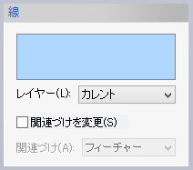
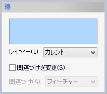

交点(スケッチ)
交点(スケッチ)
線とスケッチ平面の交点をスケッチの点として作成します。
操作方法
交点をとる線要素(複数可)を選択して,OKボタンで実行します。
パラメータ

- レイヤー
作成される要素のレイヤーを指定します。
- 関連づけを変更
チェックすると、選択した要素と作成された交点との関連を変更できます。既定値は「フィーチャー」です。
交点(スケッチ)線とスケッチ平面の交点をスケッチの点として作成します。
交点をとる線要素(複数可)を選択して,OKボタンで実行します。

作成される要素のレイヤーを指定します。
チェックすると、選択した要素と作成された交点との関連を変更できます。既定値は「フィーチャー」です。